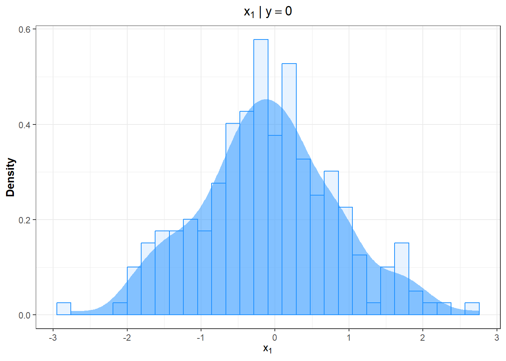

── Attaching core tidyverse packages ──────────────────────── tidyverse 2.0.0 ──
✔ dplyr 1.1.4 ✔ purrr 1.1.0
✔ forcats 1.0.0 ✔ stringr 1.5.1
✔ ggplot2 3.5.2 ✔ tibble 3.3.0
✔ lubridate 1.9.4 ✔ tidyr 1.3.1
── Conflicts ────────────────────────────────────────── tidyverse_conflicts() ──
✖ dplyr::filter() masks stats::filter()
✖ dplyr::lag() masks stats::lag()
ℹ Use the conflicted package (<http://conflicted.r-lib.org/>) to force all conflicts to become errors
data=read_csv("~/projectR/toy_bayes.csv")
Rows: 500 Columns: 4
── Column specification ────────────────────────────────────────────────────────
Delimiter: ","
chr (2): x3, y
dbl (2): x1, x2
ℹ Use `spec()` to retrieve the full column specification for this data.
ℹ Specify the column types or set `show_col_types = FALSE` to quiet this message.
X1 y X2 son continuas X3 CATEGÓRICA CON 3 CATEGORÍAS Y tiene dos categorías: Class 0 y Class 1
data |>filter(y =="Class0") |>ggplot(aes(x = x1, y =after_stat(density))) +geom_histogram(color ="dodgerblue", fill ="slategray1", alpha =0.4) +geom_density(fill ="dodgerblue", color =NA, lwd =1, alpha =0.5) +labs(x =expression(x[1]), y ="Density", title =expression(x[1] ~"|"~ y ==0)) +theme_bw() +theme(plot.title =element_text(hjust =0.5, face ="bold",margin =margin(0, 0, 5, 0)),axis.title.x =element_text(face ="bold"),axis.title.y =element_text(face ="bold", angle =90),legend.title =element_text(hjust =0.5, face ="bold"),legend.text =element_text(hjust =0.5),strip.text =element_text(size =14, hjust =0.5, face ="bold",margin =margin(2, 3, 3, 3)))
`stat_bin()` using `bins = 30`. Pick better value with `binwidth`.

La curva sombreada el el kernel plot, distribución de \(X_1\) dado que y=0 Se puede hacer lo mismo para \(X_2\) y y=1
¿Cómo estimar la densidad de \(X_1\) y \(X_2\)? f(x1|y) y f(x2|y)? con un estimador de tipo kernel
Se hace de forma no parámetrica, se usa un estimador de tipo kernel (la curva anterior es \(\hat{y}\) (x1|y=0))
Para estimar la funci¿ón de X para X3 se cuentan las observaciones de cada clase
data |>filter(y =="Class0") |>#se realiza un filtro por la var de respuesta, se quiere que sea igual a la primera clasegroup_by(x3) |># se agrupa por los diferentes valores de x3summarise(n =n()) |>#comienza a hacer conteos para las 3 categoríasmutate(prob = n/sum(n)) #se crea una nueva variable o se modifica una existente, en este caso ésta calcula las probabilidades
Se puede hacer exactamente lo mismo pero con filtro Y y sus categorías prior: probabilidad de que y tome alguno de los calores \(P(y=k)\)
prior = data |>group_by (y)|>## Agrupamos por la etiquetasummarise(n=n()) |>## Contamos el número de observaciones de cada clase#la función n()cuenta cuántas observacionnes hay en los casosmutate(prior_prob = n/sum(n)) ## Calculamos las probabilidades a priori
prior
# A tibble: 2 × 3
y n prior_prob
<chr> <int> <dbl>
1 Class0 209 0.418
2 Class1 291 0.582
Al tener un clasificador, queremos clasificar nuesrasobservaciones entonces ahora \(\tilde{x}=(0.4,1.5,level1)\)
Ahora estimamos f(x1) y f(x2) de las cuales extraemos las bandwidths
bws = data |>group_by(y) |>## Agrupamos por la etiqueta en este caso es y, creamos las bandwiths necesarias para cada clase de ysummarise(bw1 =density(x1)$bw,bw2 =density(x2)$bw) ## Extraemos los bandwidths de x1 y x2
bws
# A tibble: 2 × 3
y bw1 bw2
<chr> <dbl> <dbl>
1 Class0 0.260 0.130
2 Class1 0.0707 0.498
como tenemos 2 clases de y se repite la observación dos veces, en n clases serían n observaciones numprobs representa la densidad de las variables numéricas
las clases son mi k=1 y k=2, por eso conviene que se repita y tengan todas las categorías de y. Ej. primera columna sirve para \(\hat{f}(x_1|y=class0) =0.4\)
se usa estimador de tipo kernel, en este caso $(|y) $ lo cual es igual a la kernel function y con eso se estimano los valores del numerador en P(Y=k|X=xtilde) ¨¨¨¨
K =function(x){return(exp(-x^2/2)/sqrt(2*pi))}
mando a llamar la función kernel que recién creé y se la aplico a lo que sea que me dan de la función de x
num_probs = num_probs |>group_by(y) |>## Agrupamos por la etiquetasummarise(kernel1 =kernel(x1,data$x1,bw1), ## Calculamos los kernels sobre x1 y x2 nueva y se necesitan los datos originales de éstoskernel2 =kernel(x2,data$x2,bw2)) |>select(y, kernel1, kernel2) ## Seleccionamos sólo la etiqueta y los kernels
num_probs
# A tibble: 2 × 3
y kernel1 kernel2
<chr> <dbl> <dbl>
1 Class0 0.148 0.248
2 Class1 0.136 0.271
ejemplo columna 1 es \(\tilde{f}(x_1|y)\) y dependiendo sus clases
cat_probs = data |>group_by(y,x3) |>## Realizamos la agrupación por la etiqueta y x3summarise(n =n()) |>## Contamos el número de observacionesgroup_by(y) |>## Agrupamos por la etiquetamutate(prob = n/sum(n)) |>## Calculamos las probabilidadesfilter(x3=="Level1") ## Seleccionamos sólo el caso cuando x3 = Level1
`summarise()` has grouped output by 'y'. You can override using the `.groups`
argument.
cat_probs
# A tibble: 2 × 4
# Groups: y [2]
y x3 n prob
<chr> <chr> <int> <dbl>
1 Class0 Level1 11 0.0526
2 Class1 Level1 200 0.687
total =sum(prior$prior_prob * num_probs$kernel1 * num_probs$kernel2 * cat_probs$prob)